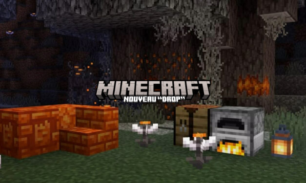

MINECRAFT NEWS
Actualitées
-

Les lots de bravoure sont là !
Préparez-vous à rassembler votre courage et à remasteriser votre inventaire, car les Lots de bravoure sont enfin là ! Notre troisième lancement de jeu apporte des bundles (un objet qui vous permet de stocker et d'empiler d'autres objets) et le mode Hardcore (le sous-mode Survie le plus difficile) à Minecraft – et il est disponible pour jouer dès maintenant.
-

Nouveau PatchNote
Préparez-vous à explorer de nouvelles terres ! Une mise à jour exceptionnelle vient d'arriver avec un nouveau biome mystérieux, des blocs uniques, et des tonnes de nouveautés prêtes à être découvertes ! Rassemblez vos outils, et plongez dans cette aventure enrichie de nouvelles ressources et secrets à découvrir.
-

Fleurs pour les yeux et résine
Êtes-vous déjà entré dans le jardin pâle ? Deux nouvelles fonctionnalités du prochain jeu seront testées dans l'aperçu et les tests bêta de Bedrock cette semaine : les fleurs des yeux (une fleur unique au jardin pâle) et la résine (un nouveau bloc) !
Section Actus
Ne ratez pas les dernières actus Minecraft !
contenus
Accroche désormais n’importe quel objet sur tes pancartes !
actualités
Nouvelle mise à jour sur Minecraft Dungeons : tous les problèmes récents sont corrigés !
contenus
Nouveau skin disponible sur le Marketplace !
contenus
Des portails sont désormais disponibles partout dans l'Overworld !

actualités
Une nouvelle mise à jour, la 1.21, est disponible avec de nouveaux donjons !

actualités
Minecraft Education vous apprend tout sur la vie et la faune de Minecraft !
actualités
Les chunks sont désormais plus diversifiés grâce à nos développeurs !

actualités
Les grottes sont désormais aussi verdoyantes que l'Overworld !

actualités
Le PvP a une nouvelle vie : apprenez à combattre à nouveau !
Page non disponible
La page des actualités de développement et des contenues n'est pas encore disponible. Revenez plus tard !
PatchNotes
MINECRAFT - 1.21.43 (BEDROCK)
Posted: 28 October 2024
FIXES:
-Fixed an issue that prevented items being used or consumed when looking at a Copper Block (MCPE-187188)
-Fixed an issue that prevented some Trophies from being unlocked on PlayStation®5
-To ensure players receive all missing Trophies, certain objectives that didn’t unlock previously may need to be completed again. Sorry for the inconvenience and we thank you for your patience!
-Fixed an issue that prevented some notifications from appearing on Xbox
MINECRAFT: JAVA EDITION 1.21.3
Fixed bugs in 1.21.3
MC-277791 - Attempting to join a Realm with a Resource Pack enabled fails with an error
MC-277779 - Salmon from 1.21.1 or before shrink when updating to 1.21.2
MINECRAFT: JAVA EDITION 1.21.2 - BUNDLES OF BRAVERY
New Features
Bundles:
-A Bundle is an item that can pack different items together into the same stack
-A Bundle only fits one stack (usually 64 items) but it can be a mixture of many different item types
-You can insert items into a Bundle directly in the inventory
-Bundles have a tooltip that shows the items inside
-If a Bundle has less than 12 item types inside, the tooltip will show all of them
-Otherwise, the tooltip will show the top three rows of items (at least 8 item types) and the others will be hidden below
-You can select any of the visible items to pull out of the Bundle
-Right-click to take the first item
-Use the scroll wheel to select a different item, then right-click to take it
-When selecting an item to remove, the Bundle icon shows that item poking out of the Bundle
-When holding a Bundle in hand, you can empty items onto the ground by right-clicking or holding right-click
-The Bundle is crafted with one String above one Leather
-The controls have changed from the original prototype:
-Use left-click to put an item into a Bundle
-Use right-click to remove the top item type from a Bundle
-When the Bundle tooltip is visible, use the mouse wheel to select a different item type, then use right-click to remove it
MINECRAFT - 1.21.41 (BEDROCK)
Posted: 22 October 2024
-A new update is being released to address a few issues with the 1.21.40 release. This update will be rolling to all platforms as they become available, so please allow time for the update to reach you.
FIXES:
Realms:
-Fixed issue where game mode and difficulty were not being preserved after uploading or replacing world in Realms Slot. It should now be safe to play Hardcore on Realms, regardless of what kind of world the Hardcore world is replacing.
Technical Updates:
Biomes:
-Fixed an issue where chunks created before 1.17.40 could behave as Ocean biomes, with ocean-like fog, sky color, and mob spawning (MCPE-186928)
MINECRAFT - 1.21.3 (PS4 ONLY)
Posted: July 15, 2024
FIXES:
-Fixed an issue that could occur with back-end services on PlayStation 4
MINECRAFT: JAVA EDITION 1.20.5 - ARMORED PAWS
-Do you smell that? Ah yes, it's the magical, tell-tale scent of release day Tuesday - and what a release day it is!
-Today we are shipping Minecraft: Java Edition 1.20.5, also known as the Armored Paws drop! Travel to the Savanna and Badlands biomes and say hello to the endearing Armadillos. Find and befriend eight new Wolf variants and equip your canine companions with dyable armor made from Armadillo Scutes and go adventuring together!
-On the technical side, the Armored Paws drop is also introducing a change to how Java Edition spawn chunks work, the details of which we covered in the changelog for Snapshot 24w03a earlier this year. The tl;dr version of this change is that we're making the spawn chunk radius a configurable game rule and decreasing the default value by 98%. This should translate to a noticeable performance boost for most players!
-So what are you waiting for? Stock up on food and water and start reading through the complete 1.20.5 changelog below. It's a looong one.
-Happy scute brushing!
NEW FEATURES:
-Added Armadillo and Armadillo Scutes
-Added Wolf Armor
-Added Wolf variants